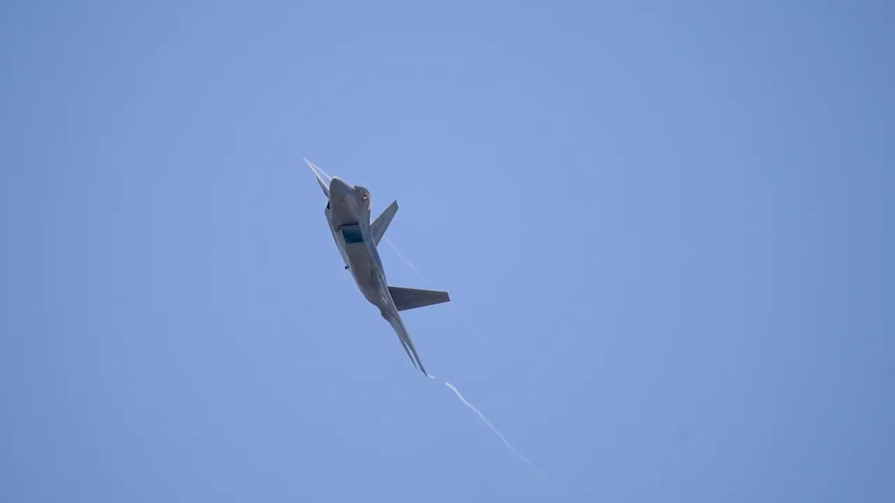
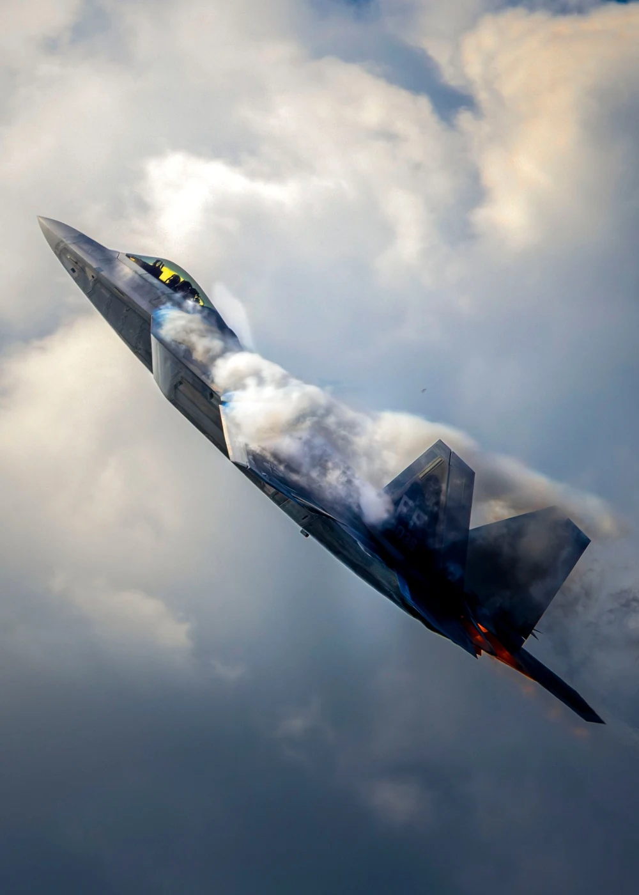

A forma encontra o movimento.
F–22RAPTOR
O voo em cada detalhe.
O ritmo é o da sua rolagem.
O céu como
perspectiva.
Uma aeronave, diferentes pontos de vista. O contorno aparece entre nuvens, muda de direção e ocupa o espaço por um instante.
Este ensaio reúne registros públicos de demonstrações aéreas do F-22 Raptor. A edição aproxima a fotografia de uma experiência de navegação: ampla, direta, sem pressa.
Abrir a galeriaObserve a forma.
Acompanhe o movimento.

Ângulos que
ficam.
Abra uma fotografia
para observar de perto.
SOBRE ESTE ARQUIVO
Imagens reais.
Um estudo independente.
Esta página é um projeto de portfólio sobre direção de arte e desenvolvimento web. Não é um site oficial, uma oferta de produto ou uma representação de qualquer organização.
Consultar fontes e créditos
Fotografias: Staff Sgt. Lauren Diaz / U.S. Air Force, via DVIDS. Vídeo: Staff Sgt. Mary Bowers / U.S. Air Force, via DVIDS. Mídias identificadas como domínio público nas páginas originais, sujeitas às condições de uso do acervo.